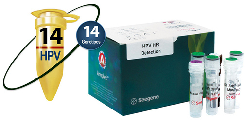

ANYPLEX™ II HPV HR DETECTION

INDICACIÓN DE USO:
AnyplexTM II HPV HR Detection está diseñado específicamente para la detección simultánea de 14 genotipos de VPH de alto riesgo incluyendo VPH16 y VPH18, los cuales contribuyen al desarrollo de cáncer cervical.
Analitos:
• 14 genotipos de VPH de alto riesgo:
- 16, 18, 31, 33, 35, 39, 45, 51, 52, 56, 58, 59, 66, 68
• Control interno.
Muestras:
• Hisopados cervicales.
• Muestras de citología en base líquida.
Equipos compatibles:
• Extracción automatizada y montaje de PCR.
- Nimbus IVD (Hamilton).
- STARlet (Hamilton).
• PCR en tiempo real.
- CFX96TM (Bio-Rad).
CARACTERÍSTICAS:
• Tamizaje de 14 genotipos de VPH de alto riesgo en una sola reacción.
• PCR multiplex en tiempo real con resultados confiables mediante el uso de las tecnologías DPOTM y TOCETM.
• Manejo de muestras y pruebas de fácil automatización.
• Uso del sistema UDG para prevenir el acarreo de contaminaciones.
• Control interno endógeno para la validez del ensayo (actina).
• Interpretación de datos sencilla mediante el uso del Visualizador de Seegene.
Visualizador Seegene:
• Análisis e interpretación de resultados rápidos y sencillos.
• Interfase especializada para pruebas multiplex.
• Enlazable a LIS.
• Entrada de datos del paciente a través del sistema de código de barras.
• Impresión en varios formatos.
• Resultados descargables en archivo CVS.
• Visualización conveniente para el análisis cuantitativo de resultados.
INFORMACIÓN DE PEDIDO:
|
Nombre del producto |
Catálogo No. |
Presentación |
|
Anyplex™ II HPV HR Detection |
HP7E00X |
100 rxns |
PUBLICIDAD DIRIGIDA A
PROFESIONALES DE LA SALUD
Registro Sanitario No.: 2545R2015 SSA
Aviso de Publicidad No.: 173300202C3461
DATOS COMPLEMENTARIOS: Para mayor información comunicarse a:
amplibio-seegene diagnostics, S.A.p.i. DE C.V.
Teléfonos: (55) 5035-9808, 5377-1609,
5377-1615, 5377-1612
www.asdx.mx